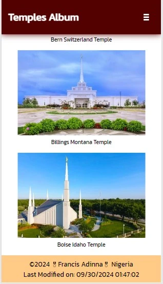
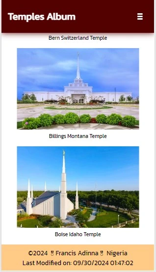
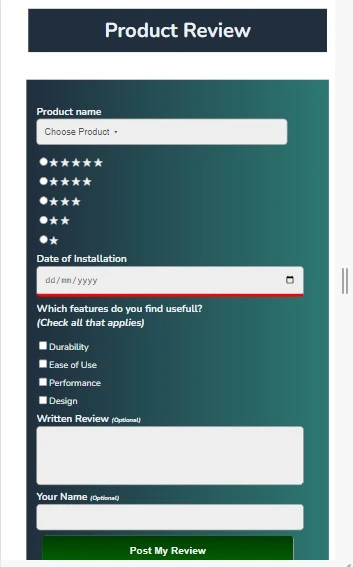
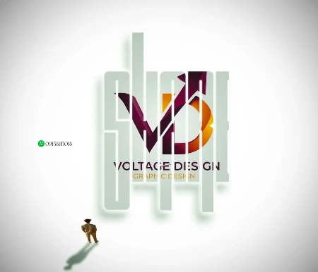
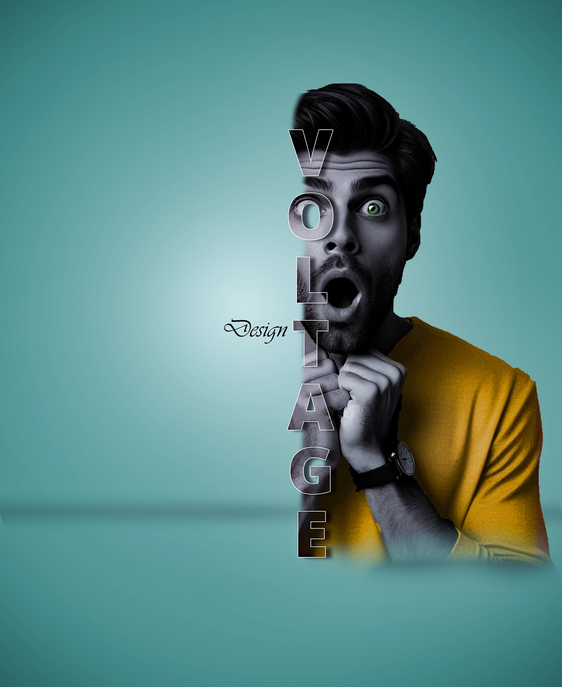
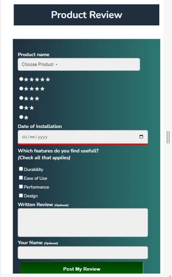
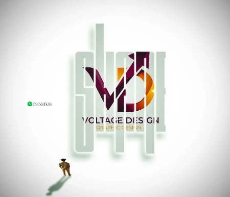
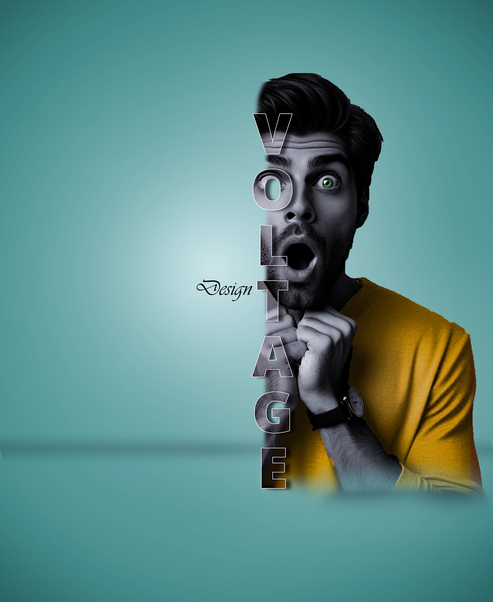

Who is Francis Adinna?
Francis Adinna is a passionate graphic designer and aspiring frontend developer. With a keen eye for aesthetics and a drive to learn, I create visually engaging designs that communicate effectively and resonate with audiences. My journey in design has led me to explore the digital world, where I'm now developing skills in frontend technologies to expand my creative capabilities. As I blend my graphic design expertise with a budding foundation in web development, I'm dedicated to crafting experiences that are both visually appealing and user-friendly.
 

 




